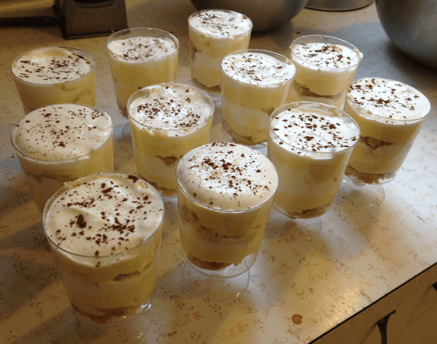

This is another original recipe. The key to this tiramisu is that it is assembled in individual servings: I think this is what makes good tiramisu - the sheet cake type, while faster to make, tends not to get the ratios quite right.
Ingredients:
6 egg yolks
\(\frac{3}{4}\) cups sugar
\(\frac{2}{3}\) cups milk
450g mascarpone cheese
\(\frac{1}{2}\) tsp vanilla extract
\(\frac{3}{4}\) cups coffee
2 tbsp dark rum
Ladyfinger cookies
2 cups whipping cream
3 tbsp icing sugar
Plastic wine cups (6-8 oz ideally)
Instructions:
In a medium pot, whisk egg yolks and sugar, then whisk in milk. Cook on medium, stirring constantly to boil. Boil 1 minute gently, remove from heat, let cool a bit, cover and chill in fridge for at least 1 hour.
In a bowl, beat together mascarpone and vanilla. Then whisk in yolk mixture until smooth.
In a bowl, combine cofee and rum.
Split ladyfingers in half lengthwise (this is a bit difficult, use a small serrated knife - it exposes all of the absorbent part of the cookie) and drizzle with the coffee/rum mixture (you may need to make more of that mixture depending on how many cookies you use - about \(\frac{3}{4}\) tbsp per half cookie).
Whip together whipping cream and icing sugar to stiff peaks.
Layer ladyfingers, cheese mixture, and whipped cream, and repeat (you can probably get 3 cycles in each wine cup).
Sprinkle top with cocoa powder to garnish. Keep refridgerated: best served after at least 4 hours in the fridge.